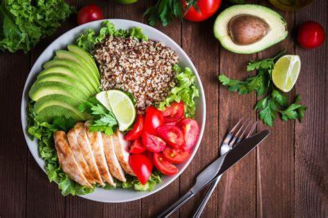

Healthy Eating Recipes
You're in control of the ingredients
Lisa Valente, M.S., R.D., nutrition editor for EatingWell and Cooking Light, says one of the best parts about cooking at home is controlling the ingredients so you know exactly what you're eating. This is important not only for people with dietary restrictions-as it can be frustrating figuring out which items at a restaurant are safe to eat-but also for anyone trying to eat healthier. You control the amount of salt, added sugar and spice going into your food when you're in charge-and can adjust it to suit your tastes. You can also follow your cravings while sticking to a healthy eating regimen by making lighter versions of your favorite meals.
Recipes Categories
Breakfast
- Recipe 1: Avocado Toast with Poached Egg
- Description: A hearty and nutritious start to your day with whole-grain toast, creamy avocado, and a perfectly poached egg.
- Recipe 2: Berry Smoothie Bowl
- Description: A refreshing and antioxidant-rich smoothie bowl topped with fresh berries, chia seeds, and granola.
Lunch
- Recipe 2: Quinoa Salad with Chickpeas and Veggies
- Description: A protein-packed salad with quinoa, chickpeas, and a medley of colorful vegetables.
- Recipe 2: Turkey and Spinach Stuffed Bell Peppers
- Description: Nutritious bell peppers stuffed with a savory mix of ground turkey and spinach.
Dinner
- Recipe 1: Grilled Salmon with Lemon and Asparagus
- Description: Lightly seasoned grilled salmon paired with fresh asparagus for a perfect dinner.
- Recipe 2: Sweet Potato and Black Bean Chili
- Description: A hearty and warming chili made with sweet potatoes, black beans, and a blend of spices.